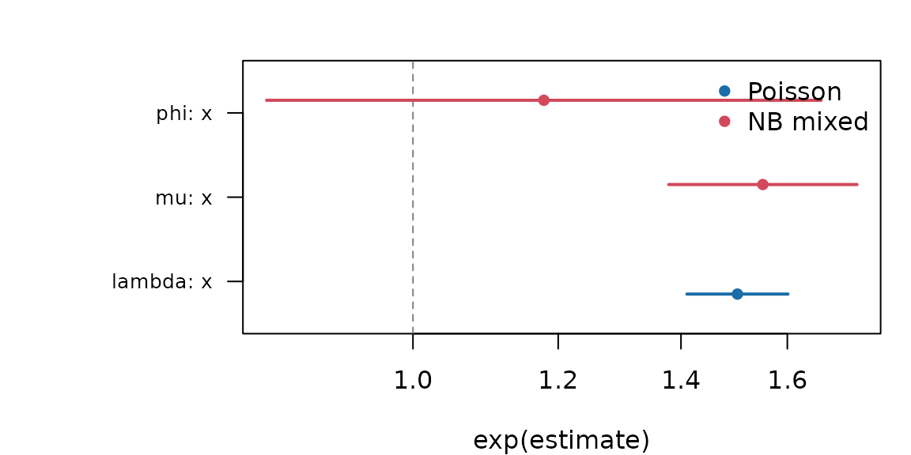

library(regcompR)
n <- 300
d <- data.frame(x = rnorm(n), g = factor(rep(1:30, each = 10)))
d$y <- rnbinom(n, mu = exp(1 + 0.4 * d$x + rnorm(30, 0, 0.4)[d$g]), size = 2)
f1 <- regcomp(y ~ x, family = "poisson", data = d)
f2 <- regcomp(y ~ x + (1 | g), phi ~ x, family = "nb2", data = d)Regression tables
regcomp_table() puts one or several fits side by side.
Rows are grouped by distribution parameter (each parameter has its own
regression), random effects are reported as standard deviations and
correlations, and fit statistics close the table. In a document chunk
the table renders as a formatted HTML, LaTeX or Word table, in R
Markdown and Quarto alike:
tab <- regcomp_table(Poisson = f1, `NB mixed` = f2, exponentiate = TRUE, stars = TRUE)
tab| Parameter | Term | Poisson | NB mixed |
|---|---|---|---|
| lambda | (Intercept) | 3.121*** [2.920, 3.335] | |
| x | 1.503*** [1.410, 1.601] | ||
| mu | (Intercept) | 2.800*** [2.308, 3.398] | |
| x | 1.552*** [1.379, 1.746] | ||
| phi | (Intercept) | 1.952*** [1.419, 2.685] | |
| x | 1.179 [0.832, 1.669] | ||
| mu (random effects) | sd((Intercept) | g) | 0.439 [0.304, 0.635] | |
| nobs | 300 | 300 | |
| logLik | -850.772 | -671.063 | |
| AIC | 1705.545 | 1352.125 | |
| BIC | 1712.952 | 1370.644 |
95% confidence intervals in brackets; coefficients exponentiated; p < 0.05, ** p < 0.01, *** p < 0.001.*
In the console the same object prints as text:
print(tab)
#> parameter term Poisson
#> lambda (Intercept) 3.121*** [2.920, 3.335]
#> x 1.503*** [1.410, 1.601]
#> mu (Intercept)
#> x
#> phi (Intercept)
#> x
#> mu (random effects) sd((Intercept) | g)
#> nobs 300
#> logLik -850.772
#> AIC 1705.545
#> BIC 1712.952
#> NB mixed
#>
#>
#> 2.800*** [2.308, 3.398]
#> 1.552*** [1.379, 1.746]
#> 1.952*** [1.419, 2.685]
#> 1.179 [0.832, 1.669]
#> 0.439 [0.304, 0.635]
#> 300
#> -671.063
#> 1352.125
#> 1370.644
#> 95% confidence intervals in brackets; coefficients exponentiated; * p < 0.05, ** p < 0.01, *** p < 0.001.show = "se" gives standard errors instead of intervals;
conf.level, digits and stats
control the rest. For Bayesian fits the table shows posterior means with
credible intervals, the number of draws and the largest R-hat.
regcomp_table(f1, f2, show = "se", stats = c("nobs", "AIC"))| Parameter | Term |
|
|
|---|---|---|---|
| lambda | (Intercept) | 1.138 (0.034) | |
| x | 0.407 (0.032) | ||
| mu | (Intercept) | 1.030 (0.099) | |
| x | 0.439 (0.060) | ||
| phi | (Intercept) | 0.669 (0.163) | |
| x | 0.164 (0.178) | ||
| mu (random effects) | sd((Intercept) | g) | 0.439 (0.083) | |
| nobs | 300 | 300 | |
| AIC | 1705.545 | 1352.125 |
Standard errors in parentheses.
standardize = TRUE reports each coefficient per standard
deviation of its covariate, and vcov = "sandwich" or
"quasi" changes the standard errors.
coef_plot() draws the estimates of several fits side by
side:
coef_plot(Poisson = f1, `NB mixed` = f2, exponentiate = TRUE)
Tidy output
tidy(), glance() and augment()
methods follow the broom conventions, so every package built on them
works with regcompR fits: broom, modelsummary, gtsummary, and others.
tidy() adds a component column naming the
distribution parameter.
broom::tidy(f2)
#> term component effect estimate std.error statistic
#> 1 (Intercept) mu fixed 1.0296418 0.09871379 10.4305774
#> 2 x mu fixed 0.4392359 0.06031686 7.2821413
#> 3 (Intercept) phi fixed 0.6688331 0.16266095 4.1118233
#> 4 x phi fixed 0.1643357 0.17762490 0.9251839
#> 5 sd((Intercept) | g) mu ran_pars 0.4391203 0.08262669 NA
#> p.value conf.low conf.high
#> 1 1.797925e-25 0.8361664 1.2231173
#> 2 3.285626e-13 0.3210170 0.5574548
#> 3 3.925467e-05 0.3500235 0.9876427
#> 4 3.548702e-01 -0.1838027 0.5124741
#> 5 NA 0.3036812 0.6349640
broom::glance(f2)
#> family engine nobs df logLik AIC BIC converged
#> 1 Negative binomial (NB2) ml 300 5 -671.0626 1352.125 1370.644 TRUE
head(broom::augment(f1))
#> x g y .fitted .resid
#> 1 -0.6264538 1 2 2.417733 -0.3964724
#> 2 0.1836433 1 1 3.362941 -1.1937441
#> 3 -0.8356286 1 1 2.220261 -0.9405229
#> 4 1.5952808 1 10 5.976489 1.4739566
#> 5 0.3295078 1 1 3.568810 -1.3735230
#> 6 -0.8204684 1 2 2.234014 -0.1545081
modelsummary::modelsummary(list(Poisson = f1, NB = f2), shape = term + component ~ model,
output = "markdown")Export
export_table() writes a table, a fit or a list of fits
to a file whose format follows the extension: .csv,
.html, .tex, .md or
.docx (Word, with the flextable package).
export_plot() saves any diagnostic plot as
.png, .jpeg, .tiff,
.pdf or .svg.
out <- tempdir()
export_table(tab, file.path(out, "models.html"))
export_table(list(f1, f2), file.path(out, "models.csv"), show = "se")
export_plot(f2, file.path(out, "qq.png"), which = "qq", width = 6, height = 4)
list.files(out, pattern = "models|qq")
#> [1] "models.csv" "models.html" "qq.png"